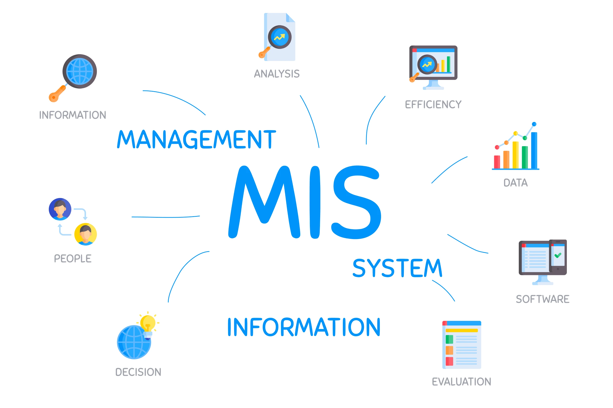

MIS & AI EthicsWebsite OverviewMckynzie Judd, Coltyn Judd, Addison Rodriguez, Brayson Beck, and John KvistadOctober 20, 2026What Is Our Website About? Our Original ParagraphOur website is about technology and how people use it every day. We will explain what Management Information Systems (MIS) are and how they help businesses. We will also talk about the good and bad ways to use AI in college. Another thing we will discuss is cybersecurity and why keeping information safe is important. We will explain what hackers and malware are and how to protect yourself from them. Our goal is to help people learn more about technology and how to use it the right way. AI-Polished ParagraphOur website explores how technology impacts businesses and everyday life. We explain how Management Information Systems (MIS) help businesses organize information and make decisions. We also discuss the responsible and irresponsible uses of artificial intelligence (AI) in college. Another important topic is cybersecurity and the importance of protecting personal information. We explain how malware and hackers can threaten online security. Our goal is to help others better understand technology and use it safely and responsibly. Important MIS Topics
|